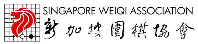
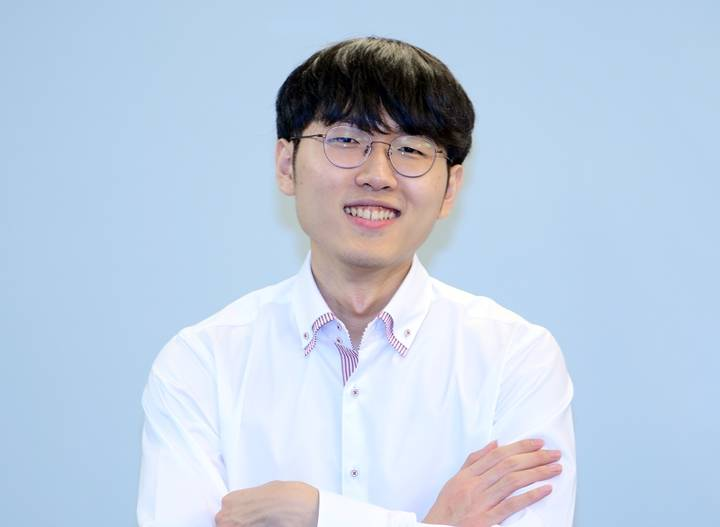
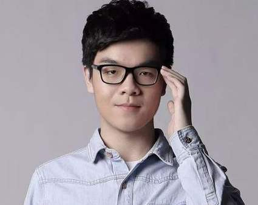
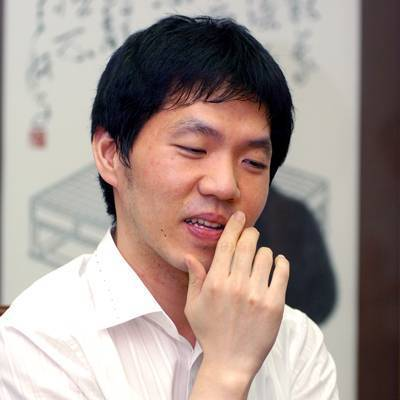

Ranks of Go
Ranks in Go are used to indicate a player's skill in the game and they are measured using kyo and dan grades. Kyu grades, abbreviated as k, are considered student grades and decrease as playing level increases, meaning that the 1st kyo is the strongest available kyu grade. Dan grades, abbreviated as d, are considered master grades and they increase from 1st dan to 7th dan. Professional players have professional dan grades, abbreviated as p, and they are separated from amateur ranks. For beginners, the range of ranks will be from 30k to 21k. For casual players, the range of ranks will be from 20k to 1k. For intermediate players, the range of ranks will be from 9k to 1k. For advanced players, the range of ranks will be from 1d to 7d. Lastly, for professional players, the range of ranks will be from 1p to 9p.
Where to learn Weiqi in Singapore

Singapore Weiqi Association is a Go association in Singapore founded in 1981. It aims to promote the game of Go in Singapore and improve the skills of local Go players. To achieve its goal professional players from China are hired to conduct lessons and tournaments are regularly organized.
Notable Weiqi champions

Shin Jin-seo is a South Korean professional Go player who has won three international championships recently in year 2020, 2021, and 2022. He was born in 17 March 2000 and is currently the best Go player in the world. Recently in year 2020, he has won a tournament in which he defeated all of his opponents, including Ke Jie, one of the best Go players in the world who has played a few matches against AlphaGo (An Artificial Intelligence) in 2017, resulting in a win streak of 23-0 in that tournament.

Ke Jie is a Chinese professional Go player who is rated as the best Go player in the world from year 2015 to 2017 and has world eight championships throughout his career. He was born in 2 August 1997 and is currently rated the second best Go player in the world after Shin Jin-seo. In year 2017, he played three matches against AlphaGo and lost all of them, unfortunately, but he also achieved remarkable results in some championships after learning from AlphaGo.

Lee Chang-ho is a South Korean professional Go player who is rated as the second best Go player in the 20th century after Go Seigen (Or Wu Qing Yuan), a Chinese-born Japanese legend of Go. He was born in 29 July 1975 and was rated the best Go player in the world from year 1991 to 2006. He is also the second youngest to become a professional Go player in the South Korean history.